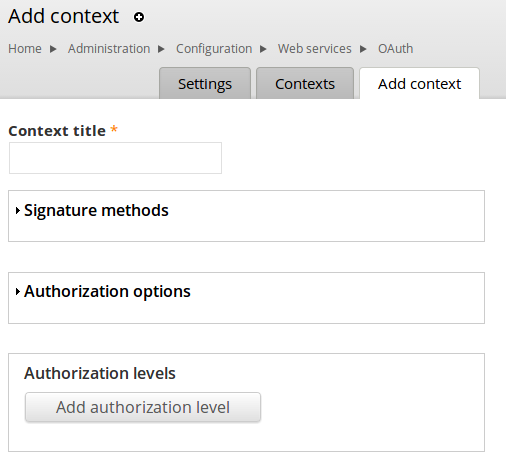

Decoupling Drupal and Consuming with Symfony2, JavaScript or Unicorns
Drupal Developer Days Dublin
June 2013
@juampy72 & @justafish
About the presenters

NPR
- Meet @daniel_jacobson, ex App Development Director at http://www.npr.org
- Built a strong API which could be consumed by a long list of clients
- The National Public Radio's CMS has been working since more than 10 years ago!
http://blog.programmableweb.com/2009/10/13/cope-create-once-publish-everywhere
Amazon Infrastructure
- All teams expose their data and functionality through APIs
- No other form of communication is allowed
- Use whatever technology you like
- "Anyone who doesn't do this will be fired. Thank you; have a nice day!" - Jeff Bezos
http://apievangelist.com/2012/01/12/the-secret-to-amazons-success-internal-apis/
Secret Projects We've Worked On
- Big Drupal multi-site install that contained a lot of bad HTML
- Utilising feeds to drive Menus and other front end items
- Disqus style commenting
create once, publish everywhere

Benefits
- Easier to upgrade front and backends separately.
- Makes frontend work fun again! We can also use wider resources
- Backend focuses on just having a good content model
- Performance
Drawbacks
- Not applicable to all sort of projects
- No Views module (not necessarily a drawback :) )
- A considerable amount of time is needed for the first project
The CMS
Drupal 7 + Services* + OAuth
- https://github.com/Lullabot/copelandia
- http://copelandia.lulladev.com
For Drupal 8, just enable the REST module and tada!
* or CreateAPI or restws or Views Datasource or a custom output
OAuth setup
Server auth
Endpoint auth
Client creation
Client access keys
Symfony2 client
Homepage
Homepage controller
class DefaultController extends Controller
{
public function indexAction()
{
$client = new Client($this->container-> getParameter('backend_host'));
$request = $client->get('/node.json');
$response = $request->send()->json();
$recipes = array();
foreach ($response['list'] as $recipe) {
$recipes[] = $recipe;
}
return $this->render('LullabotRecipeBundle:Default:index.html.twig',
array('recipes' => $recipes));
Homepage template
{% extends '::base.html.twig' %}
{% block body %}
{% for recipe in recipes %}
-
{{ recipe.title }}
{% endfor %}
{% endblock %}
Submit recipe
Submit recipe controller
$form = $this->createFormBuilder()
->add('title', 'text')
->add('body', 'textarea')
->add('prep_time', 'integer')
->getForm();
if ($request->isMethod('POST')) {
$form->bind($request);
if ($form->isValid()) {
$data = $form->getData();
$client = new Client($this->container->getParameter('backend_host'));
$client->addSubscriber(new OauthPlugin(array(
'consumer_key' => $this->container->getParameter('oauth_consumer_key'),
'consumer_secret' => $this->container->getParameter('oauth_consumer_secret'),
)));
$request = $client->post('/api/node', null, array(
'title' => $data['title'],
'body' => array('und' => array(array('value' => $data['body']))),
'field_recipe_prep_time' => array('und' => array(array('value' => $data['prep_time']))),
'type' => 'recipe'
));
jQuery Mobile Client
https://github.com/Lullabot/copelandia/tree/master/clients/jqm
Can utilise phone features using http://cordova.apache.org/
Same Origin Policy
By default, you cannot use JSON feeds from different domains e.g. example.com cannot use a feed from example2.com
- JSONP
- CORS - http://drupal.org/project/cors
Simple Tips for Building APIs
- Use version numbers in your URLs e.g. /api/1.0/recipes.json
- Don't expose raw Drupal field names as keys
- Don't settle for a bad data structure because it's the default views datasource/services output
- Stay consistent with key naming
- Try to just expose your data and not process it. This is the job of your clients
- Read this book! APIs: A Strategy Guide http://shop.oreilly.com/product/0636920021223.do
Thanks! Questions?
@juampy72
about.me/juampy
@justafish
resources
http://insready.com/en/blog/android-drupal-marriage
http://www.slideshare.net/zachbrand/npr-api-create-once-publish-everywhere
http://www.lullabot.com/blog/articles/deblobbing-your-chunks-building-flexible-content-model
http://blog.programmableweb.com/2009/10/13/cope-create-once-publish-everywhere/
https://docs.google.com/presentation/d/1_R53yG0SUFhwSLxEF-G955IaeqlWDHYwhANJRSI_Q-I/edit#slide=id.g477ac8b1_2_75
http://shop.oreilly.com/product/0636920021223.do?sortby=publicationDate
http://www.lullabot.com/blog/podcasts/insert-content-here-episode-11-daniel-jacobson-nprs-cope-and-content-apis
http://linclark.github.io/rest-portland2013